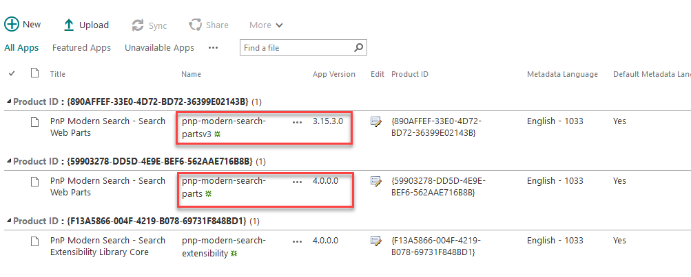

PnP Modern Search v4¶
The PnP 'Modern Search' solution is a set of SharePoint Online modern Web Parts allowing SharePoint super users, webmasters and developers to create highly flexible and personalized search based experiences in minutes.
Before modern pages and web parts built on SPFx was introduced search driven scenarios was covered by the highly flexible classic search web parts, which supported any developer to add any HTML, CSS or JavaScript they wanted to tailor their specific scenario. In the modern world this was replaced by the Highlighted Content Web Part and a not very configurable search solution for Microsoft Search.
To close the gap of customization and freedom the PnP Modern Search web parts got stated back in 2017, and have stabilized on v3. While allowing flexibility it introduces security measures to block JavaScript and CSS injection, key to many of the enterprise companies using the web parts today in productions.
As the project progressed and the search API's are moving from SharePoint to Microsoft Graph there was a need to restructure and re-invent the web parts. Hence v4 was born. The goal of v4 is to solve scenarios already solved by v3, but at the same time allow greater flexibility in how you extend the solution using web components and custom developer solutions outside of HTML/handlebars.
As more and more Microsoft Search functionality is exposed via the Microsoft Graph Search API's, we will keep on investing in v4 to surface these great capabilities.
Looking for the v3 documentation? Here you go!
PnP Modern Search v3.x deprecation
v4 uses a brand new code architecture and replace the older v3 codebase. There will be no new features added to v3.x, but we will continue to provide bug fixes and minor changes as needed. As v4.x is not yet at feature parity with v3.x, you can still use the v3.x packages to meet your requirements. Also not that there is not an auto-upgrade path from v3 to v4 due to the new architecture, so you are perfectly ok to stay on the v3 version until v4 provides the features validating your upgrade. However, the main focus is on the v4 version, and new search functionality backed by the Microsoft Graph Search API will be v4 only.
v3 and v4 don't share the same package name, Web Part and solution IDs meaning you can have them side by side on a page if necessary without overlap.

What's included?¶
The solution includes the following Web Parts:
| Component | Description |
|---|---|
| Search Results | Retrieve data from a data source and render them in a specific layout. |
| Search Filters | Filter and refine data displayed in 'Search Results' Web Parts. |
| Search Verticals | Browse data as silos (i.e. tabs) from multiple data sources. |
| Search box | Let users enter free text queries sent to 'Search Results' Web Parts. |
Supported browsers¶
Here is the list of supported browsers:
- Chrome
- Firefox
- Edge
- Edge Chromium
- Brave
PnP Modern Search do not explicitly support Internet Explorer 11. We think there are plenty of other options for enteprise scenarios in the market. Maybe it's time to move on. For developers, it represents an huge amount of time to make the solution compatible for a very low benefit. Hope you understand, ain't personal ;).
Extensibility model¶
By getting this solution, you also benefit from an advanced extensibility model allowing you to customize the solution according to your requirements if default features don't do the job for you.
The supported extensions are:
- Custom web components.
- Custom suggestions providers.
- Custom Handlebars customization (helpers, partials, etc.).
With these available customizations options, you can do pretty much anything!
Note
Extensibility samples are centralized in a dedicated repository: https://github.com/microsoft-search/pnp-modern-search-extensibility-samples/tree/main. Use them to get started to create your own or reuse existing samples in your projects.
Troubleshooting¶
If you encounter an issue, please use the GitHub issues list of this repository. Also, to help us to resolve your issue, you can include screenshots or error messages coming from:
- The faulty Web Part itself.
- Errors displayed in the browser console (typically pressing F12).
- Errors displayed in the SharePoint console (pressing CTRL+F12)
Issues, questions, feedback?¶
For any issue, question or feedback, please the official GitHub repository. We will be happy to help you!
About¶
PnP Modern Search version 4 initially made by Franck Cornu based on a fork of the @aequos 'Modern Data Visualizer' solution.
Maintainers & contributors¶
Here is the list of main contributors of the PnP Modern Search (all versions included)
- Franck Cornu (aequos) - @FranckCornu
- Mikael Svenson (Microsoft) - @mikaelsvenson
- Yannick Reekmans - @yannickreekmans
- Albert-Jan Schot - @appieschot
- Tarald Gåsbakk (PuzzlePart) - @taraldgasbakk
- Brad Schlintz (Microsoft) - @bschlintz
- Richard Gigan - @PooLP
- Matthew Stark